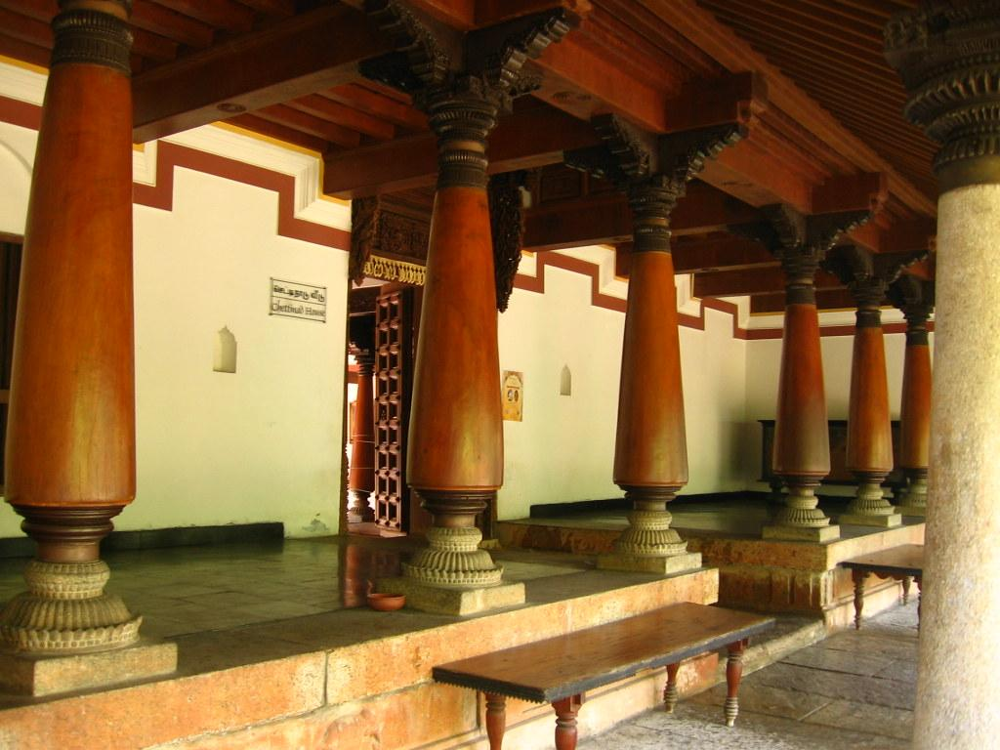
DakshinaChitra
A day trip from Chennai, on the way to Mahabalipuram. It is a cultural museum, and we completely recommend visiting if you have not been before.
Food and tourism
In and around Chennai, and a bit further south.

A day trip from Chennai, on the way to Mahabalipuram. It is a cultural museum, and we completely recommend visiting if you have not been before.
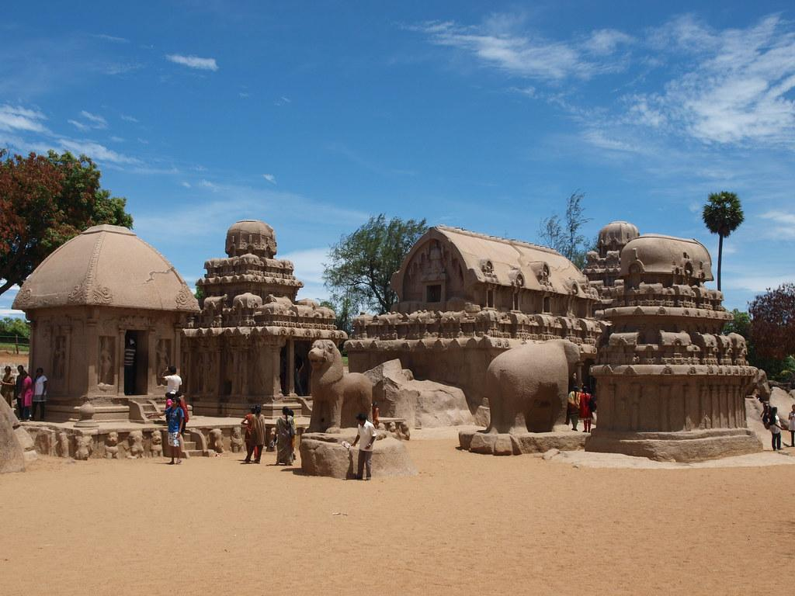
Also a day trip. Mamallapuram, or Mahabalipuram, is a town on a strip of land between the Bay of Bengal and the Great Salt Lake, in the south Indian state of Tamil Nadu. It is known for its temples and monuments built by the Pallava dynasty in the 7th and 8th centuries.
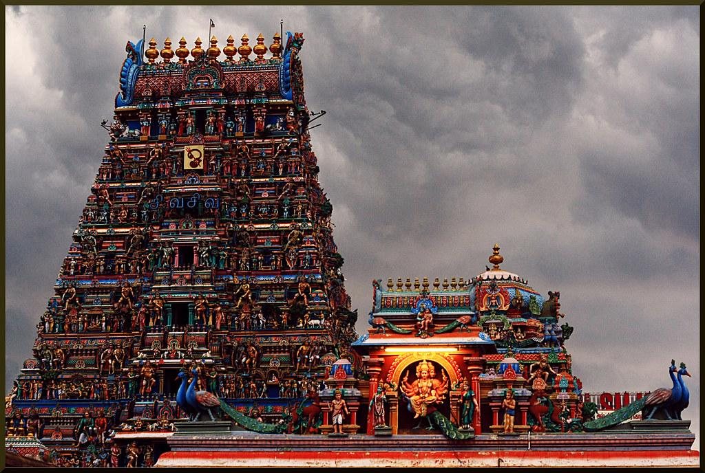
In Chennai. A Hindu temple dedicated to the god Shiva, in Mylapore. It was built around the 7th century A.D. and is an example of South Indian architecture.

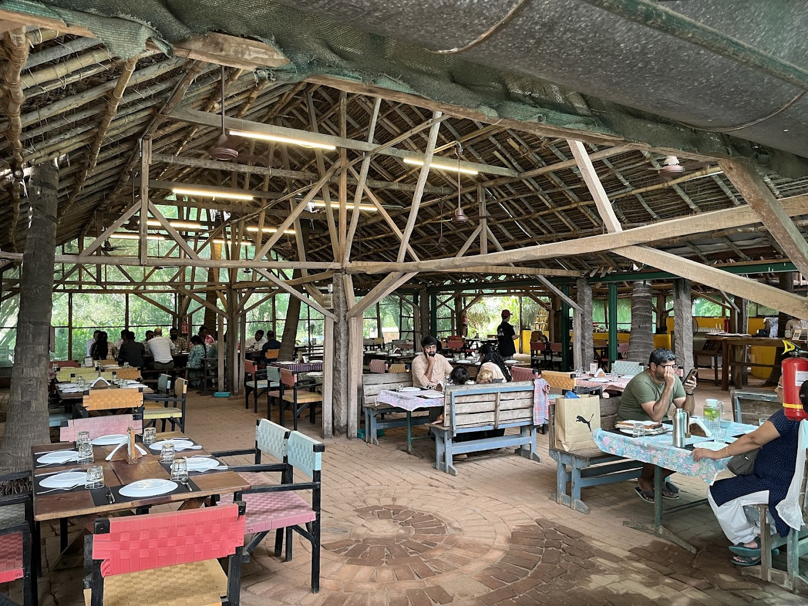
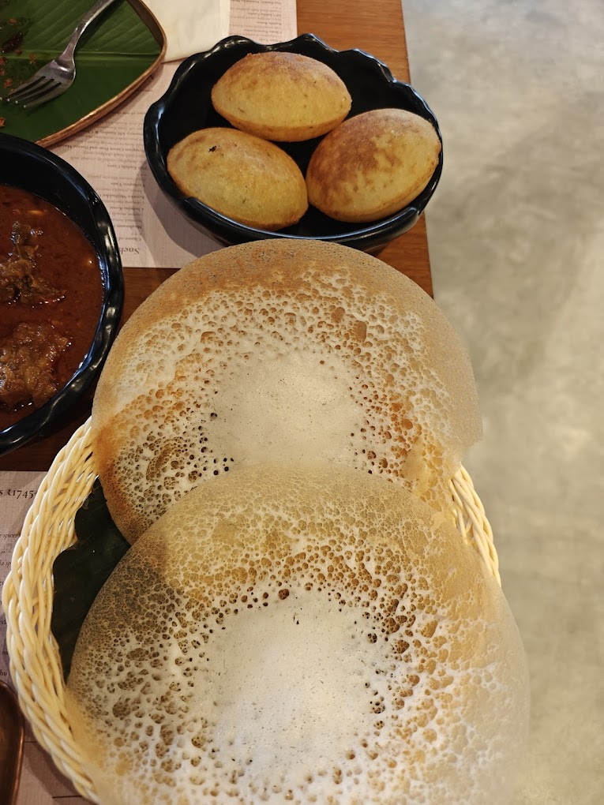
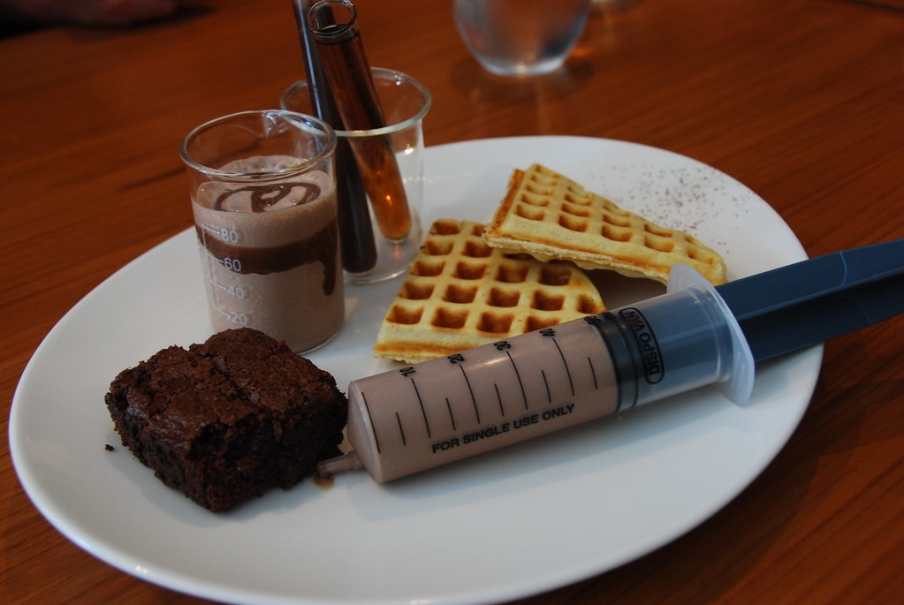
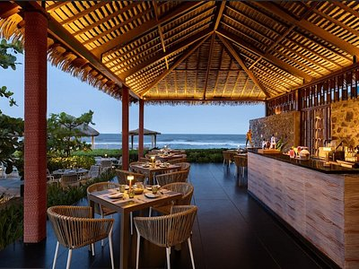
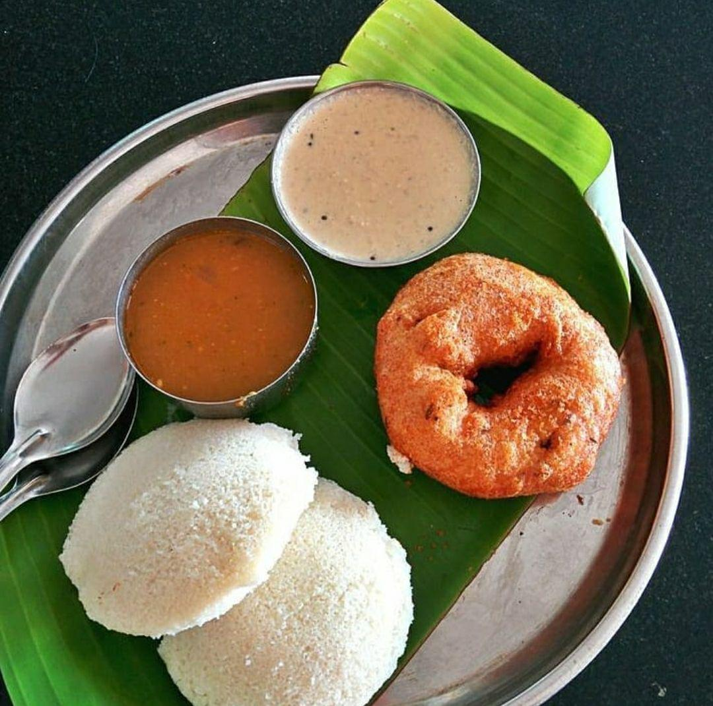
A chain, so there is one near you.
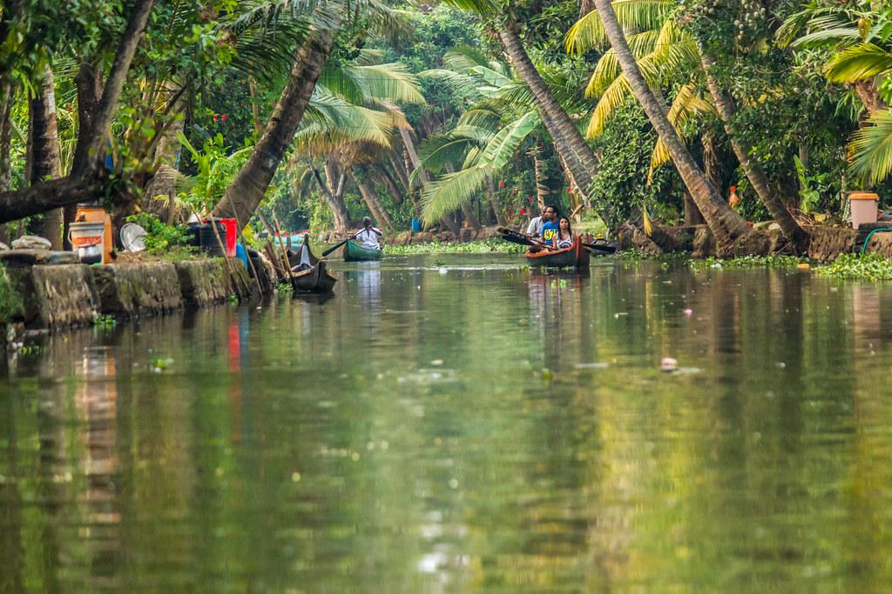
Just google it. It is a great place to visit.
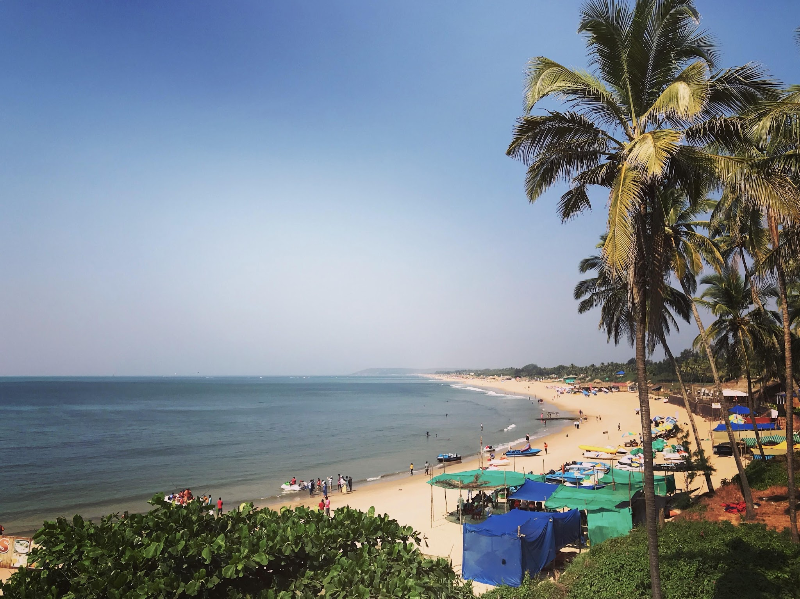
Cool beaches! Great places to party too!
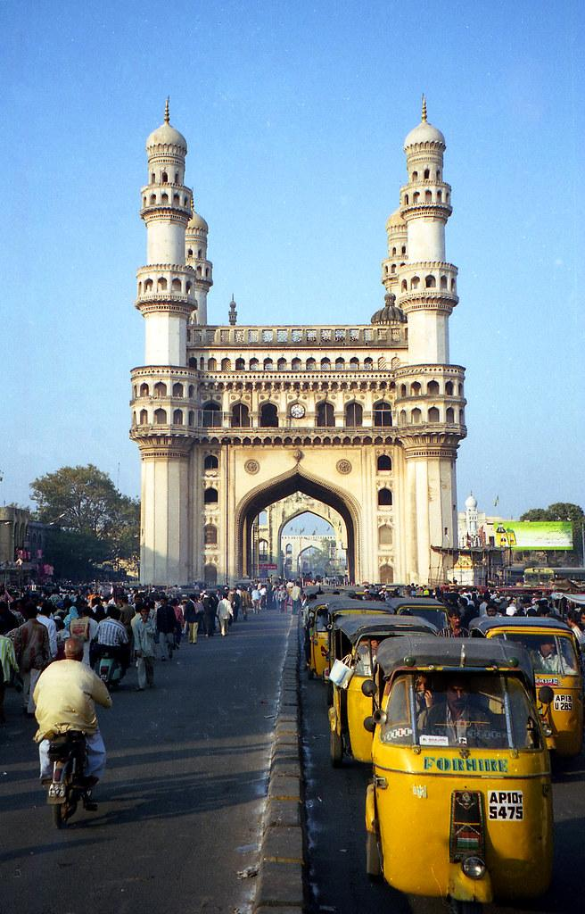
Home to Hyderabadi biriyani.
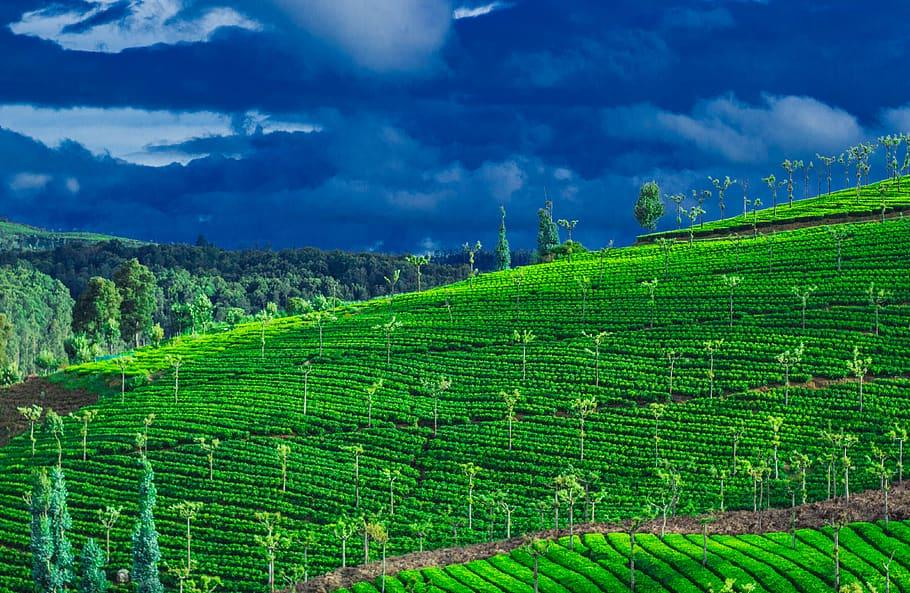
Attempt only if you are brave and can get there by bus or train overnight.
A longer list
Shout-out to Ashutosh, who put this whole list together. It is written assuming you are staying around Thiruvanmiyur, so “nearby” and “a bit far” are measured from there.
December and January
This is the music and dance festival season in Chennai. Around a thousand concerts happen and most of them are free to attend.
The nearest venue is Kalakshetra. You're recommended the dance dramas, which are very newbie-friendly and have subtitles. The details about whether tickets are online or only at the door will updated here.
Carnatic concerts can be a little hard to get into as a newcomer. Vocal concerts, duets and jugalbandhis are easier to follow than purely instrumental ones.
Listings: chennaievent.com and mdnd.in
Before you come
December and January
This is the music and dance festival season in Chennai. Around a thousand concerts happen and most of them are free to attend.
The nearest venue is Kalakshetra. Ashutosh recommends the dance dramas, which are very newbie-friendly and have subtitles. He is not sure whether tickets are online or only at the door, and will update.
Carnatic concerts can be a little hard to get into as a newcomer. Vocal concerts, duets and jugalbandhis are easier to follow than purely instrumental ones.
Listings: chennaievent.com and mdnd.in